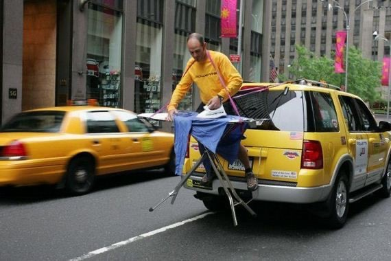
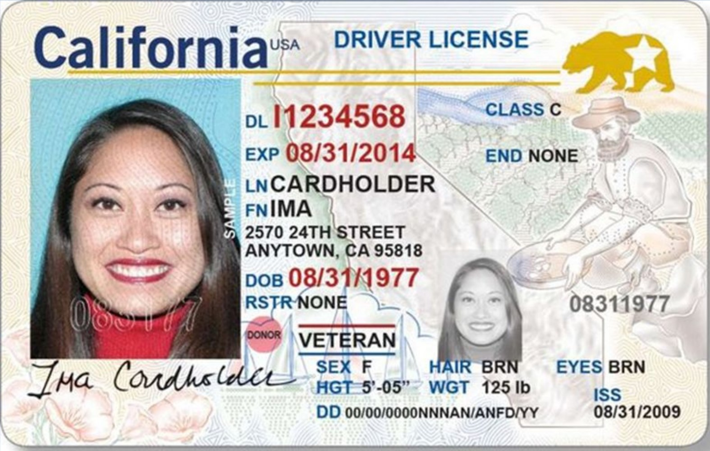

LLaVA-1.5 论文精读报告
论文题目：Improved Baselines with Visual Instruction Tuning
论文版本：arXiv:2310.03744v2，页面首页显示日期为 2024-05-15
阅读对象：LLaVA-1.5 论文与附录，重点关注其相对原始 LLaVA 的改进、方法原理、数据流转、数据处理、数据格式、训练流程与局限性
说明：本报告以三类信息为基础组织内容。
- 论文明确说明：来自论文正文、附录、图表。
- 官方实现/README 补充：来自官方
LLaVA仓库公开脚本与文档，用来帮助解释训练接口和数据格式。 - 合理推断：论文没有逐字段写出的实现细节，我会明确标注，不把推断写成事实。
1. 一页结论
如果只保留一句话，我会这样概括这篇论文：LLaVA-1.5 的关键价值，不是发明了一个全新的多模态结构，而是在 LLaVA 框架内用非常“小而有效”的改动，把“自然视觉对话”和“学术型 VQA/OCR/区域理解”更好地统一起来。
论文最核心的结论有五点：
- 原始 LLaVA 的全连接视觉-语言连接器并不弱，问题主要不在“必须换成复杂 resampler 才能强”，而在数据和训练配方。
- 相比原始 LLaVA，LLaVA-1.5 的关键增强包括：
CLIP-ViT-L-336px、2-layer MLP projector、学术任务导向数据混合、response formatting prompts。 - 这些改动叠加后，模型在
VQAv2 / GQA / TextVQA / MME / MMBench / MM-Vet等多个 benchmark 上都有明显提升。 - 论文还进一步探索了
LLaVA-1.5-HD：通过切网格编码 + 全局低分辨率上下文来支持更高输入分辨率，并报告了更好的细节感知和更低幻觉。 - 它的重要“创新性”更接近系统化 recipe innovation，而不是单点结构发明：即在公开数据、有限算力、简单结构下，给出一套高可复现、强性能的训练方案。
从“和原始 LLaVA 比较”的角度看，LLaVA-1.5 最重要的不是把模型复杂化，而是把下列几个问题处理得更干净：
- 原始 LLaVA 偏向长回答和自然聊天，对短答案、选项题、OCR 型任务不够友好。
- 原始 LLaVA 没有系统处理“回答格式控制”，因此容易在需要单词、短语、选项字母时输出冗长自然语言。
- 原始 LLaVA 的训练数据侧重
LLaVA-Instruct-158K，而 1.5 显式引入了 VQA/OCR/区域级数据和 ShareGPT 文本对话。 - 原始 LLaVA 的视觉输入分辨率更低，而 1.5 与 1.5-HD 明确把“看清细节”作为可扩展方向。
2. 论文定位与整体图景
论文标题中的 Improved Baselines 非常关键。作者并没有把这篇工作包装成“彻底替代旧范式的新框架”，而是明确地把它定义为：在 LLaVA 框架内做受控实验，系统研究 LMM 设计选择，并建立更强、更可复现的 baseline。

从 Figure 1 可以直接读出作者想强调的三件事：
- 它在 11 个任务上达到或接近当时 SoTA。
- 它的训练样本规模比一些强基线小很多。
- 它的结构变化其实很有限，主要是
MLP connector + academic-task-oriented data + response formatting。
因此，这篇论文真正回答的问题可以写成：
- 问题 1：原始 LLaVA 为什么擅长自然视觉对话，却不擅长很多 academic benchmarks？
- 问题 2：是不是必须引入更复杂的
Q-Former / resampler / 大规模额外预训练才能提升？ - 问题 3：如果不大改架构，只改数据、输出提示和少量连接层，能不能得到更强、更通用的多模态助手？
作者的回答总体是肯定的。
3. 相比原始 LLaVA，LLaVA-1.5 到底改了什么
为了避免把改动说散，先给一个压缩版对比。
-
视觉编码器 原始 LLaVA：核心版本通常围绕
CLIP ViT-L/14。 LLaVA-1.5：换成openai/clip-vit-large-patch14-336，把输入从更低分辨率提升到336 x 336。 -
视觉到语言的连接器 原始 LLaVA：单层线性投影。 LLaVA-1.5：
mlp2x_gelu，也就是两层 MLP，中间带GELU。 -
指令微调数据 原始 LLaVA：核心是
LLaVA-Instruct-158K。 LLaVA-1.5：扩展成665K的多源混合数据，加入VQAv2 / GQA / OKVQA / A-OKVQA / OCRVQA / TextCaps / RefCOCO / Visual Genome / ShareGPT。 -
回答形式控制 原始 LLaVA：没有系统化的“短答案格式提示”机制。 LLaVA-1.5：为不同数据集和评测集加入明确的
response formatting prompt。 -
输入分辨率扩展 原始 LLaVA：没有本文这种系统化的高分辨率扩展分析。 LLaVA-1.5-HD：用“切网格编码 + 合并 + 全局上下文”的方式支持更高分辨率输入。
-
能力侧重点 原始 LLaVA：更像一个会聊天、会描述图像的视觉助手。 LLaVA-1.5：在尽量保留视觉聊天能力的同时，显著补齐学术型 VQA、OCR、多选题、区域理解。
我认为这篇论文最值得注意的一点是：这些改动不是彼此孤立的。
VQA数据本身能提升短答案任务。- 但如果不加
format prompt，模型容易学偏输出风格。 - 只改数据还不够，
MLP projector进一步提升跨模态表示能力。 - 当模型要看 OCR 或细粒度区域时，
336分辨率和后续HD扩展就变得重要。 ShareGPT文本对话则帮助模型保留更好的自然语言行为、多语种适应能力和写作能力。
4. 论文认为原始 LLaVA 的主要短板是什么
作者在第 3 节对比了 LLaVA 与 InstructBLIP。这个对比的重点不是“谁绝对更好”，而是二者代表了两种不同偏向：
- 原始
LLaVA更强于真实视觉对话与长回答风格。 InstructBLIP更强于很多学术型 VQA benchmark，但可能在自然对话上过拟合短答案。
论文认为，原始 LLaVA 的核心短板是：
- 它对很多 academic benchmark 所要求的短格式答案适配不足。
- 对
yes/no类型问题，容易出现回答分布偏置。 - 训练分布里缺少足够多的
OCR / multiple-choice / short-answer / region-level数据。
这张图很重要。作者并不是简单地说“加 VQA 数据就会更强”，而是指出了一个更细的根因：
- 如果训练提示只是模糊地写成
Q: ... A: ...，模型并不知道你到底想要一句自然回答，还是一个单词、短语、选项字母。 - 一旦训练中短答案样本变多，但提示不清晰，模型就可能把“短答倾向”扩散到不该短答的场景。
- 所以，问题不只是“训练什么数据”，还包括“怎样把期望输出格式显式写进 prompt”。
这就是 response format prompting 的出发点。
5. 方法总览：LLaVA-1.5 的核心思路
LLaVA-1.5 的方法可以压缩成一句话：
保留 LLaVA 的简单主干，把视觉 token 更稳地映射到 LLM 空间，再用更合理的数据混合和格式提示，让模型同时学会自然对话、短答案 VQA、OCR、多选题和区域理解。
从设计维度看，它主要沿着三条线改进：
- 模型线：线性 projector 改成
2-layer MLP。 - 输入线：视觉编码器升到
CLIP-ViT-L-336px，后续再扩展到HD。 - 数据线：从
LLaVA-Instruct-158K扩展到665K指令混合数据，并为不同任务加入显式格式提示。
图 3 根据论文、附录与官方训练脚本整理的 LLaVA-1.5 数据流与训练流程示意图。
5.1 模型架构图：按真实实现展开数据流
上面这张图更偏“训练阶段和数据来源”。如果要看单条样本在模型内部到底怎么流转，更合适的是下面这张架构图：
图 4 根据官方实现整理的 LLaVA-1.5 单样本模型架构与张量流转示意图。
这张图有三个阅读重点：
- 左侧的
Raw Sample不是张量，而是磁盘路径和conversation JSON。 - 中间分成文本支路和图像支路，二者直到
prepare_inputs_labels_for_multimodal()才真正汇合。 - 右侧的 loss 不是对整条序列所有 token 统一计算，而是只对 assistant 输出位置计算；
system / user / image tokens会被设成IGNORE_INDEX=-100。
这也是为什么只看 tokenizer 层会误以为“图像只占一个 token”，而真正进入 LLM 时，那个单独的 <image> 占位已经被整段视觉 embedding 替换掉了。
5.2 类 PyTorch summary：基础版 LLaVA-1.5-13B
下面这段不是运行 torchinfo 直接导出的日志，而是根据官方实现整理的“结构摘要版 summary”。它更适合用来理解模块边界和张量形状。
Model Summary (LLaVA-1.5-13B, base 336, single image, one <image> placeholder)
================================================================================
Input Sample
image_path / conversations Python dict / list[dict]
Text Branch
preprocess_multimodal normalize <image> position
conversation template list[dict] -> prompt string
tokenizer_image_token prompt -> input_ids [1, T]
Image Branch
CLIPImageProcessor PIL -> pixel_values [1, 3, 336, 336]
CLIPVisionTower(select_layer=-2, patch) [1, 3, 336, 336] -> [1, 576, 1024]
mm_projector = Linear(1024,5120)
-> GELU
-> Linear(5120,5120) [1, 576, 1024] -> [1, 576, 5120]
Fusion
embed_tokens [1, T] -> [1, T, 5120]
prepare_inputs_labels_for_multimodal replace 1 IMAGE_TOKEN_INDEX with
576 visual embeddings
[1, T, 5120] -> [1, S, 5120]
S = T - 1 + 576
Decoder / Prediction
Vicuna / LLaMA decoder blocks x40 [1, S, 5120] -> [1, S, 5120]
lm_head [1, S, 5120] -> [1, S, vocab_size]
Supervision
labels [1, S]
system / user / image tokens -100 (IGNORE_INDEX)
assistant response tokens keep target ids
causal LM loss scalar
================================================================================
7B variant note:
hidden size changes from 5120 to 4096; decoder depth changes from x40 to x32.
这个 summary 最关键的不是记住每一个数字，而是记住三条关系：
- 视觉塔输出维度是
1024，先在 projector 里变成和 LLM 一样的 hidden size。 - 文本里的
<image>在 tokenizer 阶段只占1个逻辑占位，但在融合阶段会被576个视觉 embedding 替换。 - loss 是在融合之后的整条新序列上算的，但真正参与监督的只有 assistant 文本位置。
5.3 如果是 HD / anyres 路径，summary 哪些地方会变
基础版 336 路径里，最稳定的视觉 token 数是 576。但高分辨率路径不是固定 576，而是变成：
N_v = global tokens + local tiled tokens + optional row-end / newline tokens
S = T - 1 + N_v
以论文里常见的 3 x 2 tile 例子说明：
global view -> 256 tokens
6 local tiles -> 6 x 256 = 1536 tokens
row-end tokens -> 32 tokens
estimated visual token count -> about 1824 tokens
fused sequence length -> S = T - 1 + 1824
这也是 HD 版本更擅长细粒度阅读的直接原因之一，因为它送进 LLM 的视觉 token 明显更多；代价则是显存、序列长度和推理开销都会进一步上升。
这套方案的一个现实优点是：它并没有引入像 Q-Former 那样新的大型子网络，也没有要求百亿级图文额外预训练数据。论文给出的结论是：在公开数据和可承受算力下，简单结构依然可以做得很强。
6. 按数据流转理解 LLaVA-1.5：从原始样本到最终回答
这一版我不再把模型拆成“视觉塔、projector、LLM”三块孤立讲，而是按真实数据流转顺序来解释。因为从实现角度看，LLaVA-1.5 的关键不只是模块本身，而是样本怎样进入系统、怎样被改写、怎样变成张量、怎样和视觉特征拼接、怎样被监督。
6.1 先给出总流程
把一条训练样本送进 LLaVA-1.5，大致会经过下面这条链：
JSON sample
-> 读取 image / conversations
-> 把 <image> 规范化到用户轮开头
-> 用 conversation template 拼成完整 prompt
-> tokenizer 把 <image> 替换成一个特殊 image token 占位
-> 图像做 pad / resize / normalize
-> CLIP 产出 patch tokens
-> MLP projector 映射到 LLM hidden space
-> 用真实视觉 embedding 替换文本里的 image token 占位
-> human 部分 label 置为 IGNORE_INDEX
-> 只对 assistant 输出 token 计算 causal LM loss
这条链里最容易被忽略、但又最重要的三件事是：
- 基础版
v1_5脚本里，文本侧并不会显式塞进576个<im_patch>token。 - 真正的“视觉 token 展开”发生在模型前向内部，而不是 JSON 或 tokenizer 阶段。
- 短答、多选、OCR 的行为改进，很大程度来自prompt 组织和 label 监督方式，而不只是 projector 改了 MLP。
6.2 输入样本先长什么样
LLaVA-1.5 训练有两个阶段，对应两种样本组织方式。
A. 阶段 1：alignment pretraining 样本
官方 scripts/v1_5/pretrain.sh 使用：
--version plain--data_path ./playground/data/LLaVA-Pretrain/blip_laion_cc_sbu_558k.json
从 train.py 的 preprocess_plain() 可以看出，这一阶段假设样本是两轮结构：
- 第一轮：human，内容中带
<image> - 第二轮：gpt，内容是图像对应文本
教学化地写，样本可以理解成：
{
"id": "pretrain-0001",
"image": "LLaVA-Pretrain/images/000123.jpg",
"conversations": [
{
"from": "human",
"value": "<image>"
},
{
"from": "gpt",
"value": "A yellow bus driving down a city street."
}
]
}
preprocess_plain() 里有一个非常直接的逻辑：
- 把第一轮 human 文本强制写成只有
<image> - 然后拼成：
<image>A yellow bus driving down a city street.\n
也就是说，第一阶段本质上不是“多轮助手对话”，而是图像条件语言建模。
B. 阶段 2：visual instruction tuning 样本
官方 scripts/v1_5/finetune.sh 使用：
--version v1--data_path ./playground/data/llava_v1_5_mix665k.json
官方 Finetune_Custom_Data.md 给出的 released 格式是：
{
"id": "sample-1001",
"image": "coco/train2017/000000123456.jpg",
"conversations": [
{
"from": "human",
"value": "<image>\nWhat color is the bus? Answer the question using a single word or phrase."
},
{
"from": "gpt",
"value": "Yellow."
}
]
}
这里的关键字段只有三个：
-
id唯一样本标识。 -
image图像相对路径，不是二进制图像内容本身。 -
conversations多轮对话序列。human是输入轮，gpt是监督目标轮。
如果没有图像，例如 ShareGPT 文本对话样本，那么 image 字段可以不存在。训练代码在这种情况下仍允许这条样本进入同一个 dataloader，只是会走 text-only 分支。
6.3 不同任务的数据目标格式，到底长什么样
这一步是你特别要求补充清楚的地方。论文 Table 7 给了任务混合和格式提示，但没有把真实 JSON 全部打印出来。我这里按目标格式分类解释。
A. 短答案 VQA
目标：让模型输出单词或短语，而不是长段自然语言。
典型 prompt：
{
"from": "human",
"value": "<image>\nWhat animal is visible in the center? Answer the question using a single word or phrase."
}
典型 target：
{
"from": "gpt",
"value": "Dog."
}
适用数据：
VQAv2GQAOKVQAOCRVQA
B. 多选题
目标：只输出选项字母，而不是复述整句。
典型 prompt：
{
"from": "human",
"value": "<image>\nWhich option best describes the scene? (A) beach (B) airport (C) forest (D) kitchen. Answer with the option’s letter from the given choices directly."
}
典型 target：
{
"from": "gpt",
"value": "A"
}
适用数据：
A-OKVQAScienceQAMMBenchSEED-Bench
C. 一句话 caption
目标：明确要求一句话，不要输出多句详细描述。
典型 prompt：
{
"from": "human",
"value": "<image>\nProvide a one-sentence caption for the provided image."
}
典型 target：
{
"from": "gpt",
"value": "A man in a red jacket is riding a bicycle on a city street."
}
适用数据：
TextCaps
D. 区域级描述或坐标输出
目标：让模型在“描述某区域”和“返回某区域坐标”之间切换。
论文对 RefCOCO 的说明是：
- 随机用两种格式之一：
Provide a short description for this region.或Provide the bounding box coordinate of the region this sentence describes.
这里要明确说一句：论文没有把坐标字符串的精确序列化格式逐字段写出来。
因此，下面这个例子只是教学化示意，不应被当成论文明确给出的 released JSON 原样：
{
"from": "human",
"value": "<image>\nProvide the bounding box coordinate of the region this sentence describes: the man holding the umbrella."
}
可能的 target 语义是：
{
"from": "gpt",
"value": "[x1, y1, x2, y2]"
}
但这里到底是：
- 绝对像素
- 归一化坐标
- 逗号还是空格分隔
根据现有论文正文无法确认。
更稳妥的说法是：LLaVA-1.5 在 region-level 数据里被训练为输出区域级描述或区域定位结果，但具体字符串 schema 需要进一步查看 released data 才能完全确认。
6.4 dataloader 真正做了什么
train.py 里的 LazySupervisedDataset.__getitem__() 可以概括成四步：
- 读入第
i条 JSON 样本 - 如果有
image，就从image_folder + image路径打开图片 - 对对话内容调用
preprocess_multimodal()和preprocess() - 返回：
{
"input_ids": ...,
"labels": ...,
"image": ... # 如果有图像
}
再到 DataCollatorForSupervisedDataset：
input_ids用tokenizer.pad_token_idpadlabels用IGNORE_INDEX=-100pad- 如果 batch 中所有图像张量形状一致，就
torch.stack - 否则保留为 list
所以，模型前向之前，batch 已经具备：
- 文本 token 序列
- 监督 label
- 图像张量
6.5 文本端预处理：<image> 是怎么被规范化的
这一点在 preprocess_multimodal() 里写得很清楚。
如果某个 sentence["value"] 里有 <image>，代码会先：
- 把原有
<image>删除 - 把文字 strip 干净
- 再改写成：
<image>
真实问题文本
也就是说，无论原始 JSON 里 <image> 写在句首、句中还是句尾，进入训练模板前都会被规范化到第一行。
例如，下面这两种原始写法：
What color is the bus? <image>
和
<image> What color is the bus?
最后都会被整理成：
<image>
What color is the bus?
这样做的目的很直接：
- 避免
<image>在训练样本中的相对位置乱飘 - 让 prompt 模板更稳定
- 让图像占位符与文本问题的界面统一
6.6 文本模板：一条样本最后会被拼成什么 prompt
基础版 v1_5/finetune.sh 使用 --version v1。在 conversation.py 里，conv_llava_v1 的关键配置是：
- system prompt：
A chat between a curious human and an artificial intelligence assistant... - roles：
USER,ASSISTANT - separator style：
TWO sep = " "sep2 = "</s>"
因此，一条单轮视觉问答样本在真正 tokenization 前，可以近似理解为被串成：
A chat between a curious human and an artificial intelligence assistant. ...
USER: <image>
What color is the bus? Answer the question using a single word or phrase.
ASSISTANT: Yellow.</s>
如果是多轮 conversation，就继续按：
USER: ...
ASSISTANT: ...</s>
USER: ...
ASSISTANT: ...</s>
这样的节奏串起来。
这意味着：模型真正学习的不是一对“图像-答案”，而是一个带 system prompt、角色分隔符和多轮上下文的完整会话串。
6.7 <image> 不是普通词表 token，而是一个特殊占位
LLaVA 的实现非常关键的一点是：<image> 不会在 tokenizer 阶段直接变成“576 个 patch token”。
官方常量里写得很清楚：
IGNORE_INDEX = -100
IMAGE_TOKEN_INDEX = -200
DEFAULT_IMAGE_TOKEN = "<image>"
tokenizer_image_token() 的逻辑是：
- 先按字符串
<image>把 prompt split 成几段文本 - 分别对文本段做 tokenizer
- 在文本段之间插入
IMAGE_TOKEN_INDEX=-200
所以，对这一段：
<image>
What color is the bus?
tokenizer 之后，不是：
[576个视觉token]
而更接近：
[-200, t1, t2, t3, ...]
这里的 -200 只是一个逻辑占位。真正替换成视觉 embedding，要等到模型前向时才发生。
另外，v1_5 官方脚本还显式设置了：
mm_use_im_start_end Falsemm_use_im_patch_token False
这说明在 LLaVA-1.5 的基础 recipe 里：
- 不使用
<im_start> <image> <im_end> - 也不在文本端显式放
<im_patch>序列
这是很多人第一次读代码时最容易误解的地方。
6.8 图像端预处理：pad / resize / 插值 / normalize 是怎么做的
这是你特别要求补充清楚的重点。这里要区分两种“插值”。
A. 像素级缩放插值
这是把原始图像缩放到 CLIP 需要的尺寸时，对像素做的重采样。
B. 位置编码插值
这是把 ViT 的位置编码表从旧网格大小插值到新网格大小。LLaVA-1.5-HD 讨论的是这一类，而且它选择尽量避免这种做法。
先看基础版 LLaVA-1.5 的图像预处理。
官方 finetune.sh 使用：
--image_aspect_ratio pad
在 LazySupervisedDataset.__getitem__() 里，这条路径的处理逻辑是：
- 读取原图
PIL.Image - 调用
expand2square() - padding 背景色取自：
tuple(int(x * 255) for x in processor.image_mean)
而 clip-vit-large-patch14-336 的 image_mean 是：
[0.48145466, 0.4578275, 0.40821073]
因此背景色大约是：
(122, 116, 104)
- 再调用
processor.preprocess(..., return_tensors='pt')
preprocessor_config.json 明确写了：
size = 336crop_size = 336resample = 3
而 Hugging Face 的 CLIPImageProcessor 源码里写得更直接：
resample = PILImageResampling.BICUBIC
因此，基础版 336 路径下，图像像素缩放使用的是双三次插值（BICUBIC）。
双三次插值可以简单理解为：
- 输出图像里的一个新像素，不是只看最近的一个输入像素
- 而是参考周围
4 x 4邻域，共 16 个像素 - 用三次核函数做加权，得到更平滑的缩放结果
它通常比最近邻和双线性更适合视觉 backbone 的输入预处理。
具体例子：640 x 480 图像如何变成 CLIP 输入
假设原图大小是：
W = 640, H = 480
按 pad 路径：
expand2square()
640 x 480 -> 640 x 640
上下各补 80 像素背景。
CLIPImageProcessor.preprocess()
- 先按
size = 336缩放 - 再按
crop_size = 336做中心裁剪
因为此时图已经是 640 x 640 正方形，所以最后直接得到：
pixel_values in R^(3 x 336 x 336)
- 再做归一化：
x_norm = (x / 255 - mean) / std
其中 mean/std 用的是 CLIP 默认值。
对比：anyres / HD 辅助代码里的 resize 是怎么做的
当前官方 mm_utils.py 里还有一套 anyres 辅助逻辑：
select_best_resolution()resize_and_pad_image()divide_to_patches()process_anyres_image()
其中 resize_and_pad_image() 的逻辑是：
- 在候选分辨率里选一个最优
target_resolution - 选择标准是：优先让
effective_resolution最大；如果并列，则让wasted_resolution最小 - 依据长宽比算
scale_w和scale_h - 选较小的缩放比例，保持原图比例
- 用
math.ceil()得到缩放后尺寸 - paste 到目标大画布中央
这段 helper 代码里调用的是：
resized_image = image.resize((new_width, new_height))
代码本身没有显式写出 resample 参数。因此，如果只依据这段 helper，我不能严谨地把它写死成某一种插值核。
所以稳妥的结论是：
- 基础版
pad -> CLIPImageProcessor分支的插值，官方证据明确是BICUBIC - repo 里的某些
anyreshelper 只明确了 resize 动作，没有在该函数内部显式写出 resample 参数
6.9 视觉编码器：CLIP 到底输出什么
openai/clip-vit-large-patch14-336 的官方配置显示：
image_size = 336patch_size = 14hidden_size = 1024
所以基础版 336 路径下：
- 每边 patch 数：
336 / 14 = 24 - patch token 总数：
24 x 24 = 576
在 clip_encoder.py 里：
- 取
hidden_states[-2] - 如果
select_feature == patch，则丢弃CLS
因此，单张图像的视觉输出可明确写成：
V_clip in R^(576 x 1024)
如果 batch size 是 B，则为：
V_clip in R^(B x 576 x 1024)
6.10 MLP projector：到底把什么映射到什么
官方 builder.py 对 mlp2x_gelu 的实现是：
Linear(mm_hidden_size, hidden_size)
GELU()
Linear(hidden_size, hidden_size)
这意味着 projector 的输入维度是视觉塔输出维度，输出维度是 LLM hidden size。
对 7B 与 13B 两个版本，可以写成：
Vicuna-7B-v1.5：hidden_size = 4096Vicuna-13B-v1.5：hidden_size = 5120
因此：
7B版本：
R^(576 x 1024) -> R^(576 x 4096)
13B版本：
R^(576 x 1024) -> R^(576 x 5120)
如果拿前面的 640 x 480 图像举例，13B 路径就是：
pixel_values: [3, 336, 336]
-> CLIP: [576, 1024]
-> MLP projector: [576, 5120]
这一步完成后，视觉 token 才真正和 Vicuna 的词向量空间对齐。
6.11 多模态拼接：视觉 token 什么时候真正进入 LLM
真正关键的代码在 llava_arch.py 的 prepare_inputs_labels_for_multimodal()。
它的核心逻辑是：
- 先编码图像：
image_features = self.encode_images(images)
其中：
encode_images = vision_tower(images) -> mm_projector(image_features)
-
找出文本 token 序列中所有
IMAGE_TOKEN_INDEX=-200的位置 -
把文本 token 序列切成：
- 图像占位符之前的文本片段
- 图像占位符之后的文本片段
- 对这些纯文本片段调用：
self.get_model().embed_tokens(...)
- 在原来
-200的位置，插入真实的cur_image_features
也就是说，文本和图像最终不是在 token ID 层拼接，而是在 embedding 层 拼接。
教学化地写，一条样本在进入 LLM 前更像：
[text_embed_before]
+ [576 visual embeds]
+ [text_embed_after]
而不是：
[普通词表 token ids]
6.12 label 是怎么 mask 的，loss 到底监督谁
这是训练实现里最核心的监督细节之一。
train.py 中多个 preprocess_*() 函数都会把 targets = input_ids.clone()，然后把不该计算损失的部分置成：
IGNORE_INDEX = -100
被 mask 的部分包括：
- human 输入轮
- system prompt
- 插入进去的图像特征位置
- padding 位置
最终真正参与 loss 的，主要只有：
- assistant 输出文本 token
在 prepare_inputs_labels_for_multimodal() 里，插入视觉 token 时还会显式为它们生成一段：
torch.full((cur_image_features.shape[0],), IGNORE_INDEX)
所以，视觉 embedding 本身不会被当作“要预测的 token”。
这一步的意义很重要：
- 模型输入里包含视觉 token
- 但训练目标不是“预测图像 token”
- 而是“在看过图像和文字后，正确预测 assistant 文本输出”
6.13 response formatting prompt 为什么从实现上真的有效
从实现角度说，这个改动的本质不是新模块，而是改变了监督文本的条件结构。
例如原问题是：
What color is the shirt?
经过格式增强后变成：
What color is the shirt? Answer the question using a single word or phrase.
这会直接改变：
- tokenizer 后的输入 token 序列
- assistant 目标文本的条件分布
- label 监督对应的输出风格
也就是说，格式控制不是“推理时小技巧”，而是训练时写进监督数据本身的条件变量。
6.14 LLaVA-1.5-HD：高分辨率路径到底怎么处理

论文附录对 HD 版本的流程写得比正文更细。其核心思想是：
- 基础视觉塔使用
CLIP-ViT-L-14 (224^2) - 不把 ViT 强行改造成新的大输入分辨率
- 而是把大图拆成若干
224 x 224tile，在原始 CLIP 训练分辨率上分别编码
附录给出的步骤是：
- 选择目标分辨率
- pad 到该分辨率
- 切成
224 x 224网格 - 每个 tile 独立过 CLIP
- 合并为大特征图
- 移除只对应 padding 的特征
- 给每一行末尾加
row-end token - flatten
- 再拼接一个固定低分辨率全局视图特征
当前 repo 的 process_anyres_image() 也体现了这个“全局视图 + 局部 patches”的思路。它会先构造：
image_original_resize = image.resize((processor.size['shortest_edge'], processor.size['shortest_edge']))
image_patches = [image_original_resize] + patches
也就是说，全局视图会被放在 patch 列表最前面，后面再接各个局部块。这个实现细节和论文附录中“额外拼接一个 global context”是对齐的。需要注意的是：
- 论文附录讨论的是
224基础编码器的HD版本 - 当前 repo 的
anyreshelper 是更通用的实现骨架
两者思想一致，但不应把 repo 里的所有后续泛化实现细节都机械等同为本文附录逐字描述。
一个具体例子：如果最终选中 672 x 448
这相当于 3 x 2 个 224 x 224 tile。
每个 tile 经 CLIP-ViT-L/14-224 后：
- 每边 patch 数：
224 / 14 = 16 - 每个 tile 的 patch token 数：
16 x 16 = 256
如果一共 6 个 tile，那么局部特征总数大致是：
6 x 256 = 1536
把它拼回二维后，特征图网格相当于：
height = 2 x 16 = 32
width = 3 x 16 = 48
如果每一行末尾都加一个 row-end token，那么只看局部特征这部分，token 数会从：
32 x 48 = 1536
变成：
32 x (48 + 1) = 1568
再加一个全局 224 x 224 视图的 256 个 patch token，最终视觉 token 数大致会是：
1568 + 256 = 1824
这里还要注意：
- 如果边缘有 padding 被移除，真实 token 数会略小于这个满格估算值
- 所以这只是帮助理解的形状示意
6.15 这里的“插值”到底有哪两种，论文到底避免了哪一种
这是最容易混淆的地方，我单独拆开说。
A. 图像像素插值
这是把原图缩放到 336 x 336 或 224 x 224 时，对像素做 BICUBIC 等重采样。LLaVA-1.5 基础版明确会做这件事。
B. ViT 位置编码插值
传统高分辨率 ViT 适配常见做法是：
- 原始位置编码表只对应旧网格，比如
16 x 16 - 想支持新分辨率，比如
24 x 24 - 就把位置编码 reshape 成二维网格后做插值，再 flatten 回去
教学化写成：
E_pos in R^(16 x 16 x d)
-> interpolate
-> E_pos_new in R^(24 x 24 x d)
论文说很多方法扩展分辨率时会走这条路，而 LLaVA-1.5-HD 则尽量避免它：
- 它不是把 ViT 主干本身“拉伸到更大输入”
- 而是让每个 tile 都继续使用 ViT 原生训练分辨率
所以，LLaVA-1.5-HD 避免的主要是位置编码插值 + 大规模额外高分辨率预训练这条路径，不是完全不做任何像素 resize。
6.16 这篇论文里几个容易混淆的专业名词
-
Visual Instruction Tuning给模型的训练目标不只是“看图说话”，而是“看图后遵循指令回答”。 -
Academic-task-oriented data指 benchmark 风格较强、答案格式受约束的数据，如短答、多选、OCR、区域级问答。 -
Projector / Connector把视觉 token 从视觉空间映射到语言模型 hidden space 的桥接层。 -
Patch tokenViT 把图像切成 patch 后，每个 patch 对应一个 token 向量。 -
Row-end tokenHD路径里人为添加的“行结束标记”，帮助 LLM 感知二维布局。 -
Compositional capability指模型把不同训练来源学到的能力组合起来，例如英文视觉对话能力和多语种文本对话能力组合后，产生多语种视觉对话。 -
Hallucination输出了图里没有的内容，或者把视觉证据不足的部分强行编成看起来合理的答案。
7. 数据处理细节、样本格式与目标格式
7.1 两阶段数据规模与作用分工
论文明确沿用了 LLaVA 的两阶段训练。
-
阶段 1：vision-language alignment pretraining 目标是把视觉特征投到 LLM 可以消费的空间。
-
阶段 2：visual instruction tuning 目标是让模型学会不同任务风格下的回答行为。
结合论文表 3 与附录：
- 预训练：
558K - 指令微调：
665K
这里需要保留一条不确定性：
- 原始 LLaVA 相关资料里经常会见到约
595K - 本文表 3 用的是
558K - 根据现有信息无法确认两者口径差异
更稳妥的结论是：LLaVA 与 LLaVA-1.5 的第一阶段都属于约 0.56M ~ 0.60M 的小规模 alignment 数据，而不是数亿级对齐预训练。
7.2 LLaVA-1.5 的 665K 数据混合
附录 Table 7 给出最终 mixture：
LLaVA [36]：158KShareGPT [46]：40KVQAv2 [19]：83KGQA [21]：72KOKVQA [41]：9KOCRVQA [42]：80KA-OKVQA [45]：66KTextCaps [47]：22KRefCOCO [24, 40]：48KVisual Genome [25]：86K- 总计：
665K
其中，最关键的不是“多”，而是每类数据对应什么目标输出格式。因为格式要求本身已经被写进训练文本。
7.3 官方 README 给出的图像目录组织
论文正文不写磁盘目录，但官方 README 给了 released 数据组织方式：
playground/data/
├── coco/
│ └── train2017/
├── gqa/
│ └── images/
├── ocr_vqa/
│ └── images/
├── textvqa/
│ └── train_images/
└── vg/
├── VG_100K/
└── VG_100K_2/
这说明 image 字段本质上就是相对路径索引，而不是图像字节直接写入 JSON。
7.4 论文附录明确给出的数据处理规则
附录 A.2 给了 7 条直接影响训练行为的规则：
- 所有 VQA 数据中，同一训练图像上的 QA 会合并成一个 conversation。
ShareGPT会过滤无效对话；超过2048token 的长对话会截断，而不是切成多条。A-OKVQA会按选项数增广，以补足 multiple-choice 数据。OCRVQA抽样成80K conversations。Visual Genome对高标注密度图像采样10个 annotation。RefCOCOconversation 被切成每段少于10轮。- 每个 batch 只采样单一模态 conversation，作者报告这样提速约
25%。
最后，所有 split 会拼接并以相同概率采样。
7.5 基础版 pad 路径的数据格式与目标格式例子
这里给一个从文件到标签的完整示意。
原始样本：
{
"id": "coco-example-1",
"image": "coco/train2017/000000391895.jpg",
"conversations": [
{
"from": "human",
"value": "What color is the shirt that the man is wearing? <image> Answer the question using a single word or phrase."
},
{
"from": "gpt",
"value": "Yellow."
}
]
}
preprocess_multimodal() 之后：
{
"from": "human",
"value": "<image>\nWhat color is the shirt that the man is wearing? Answer the question using a single word or phrase."
}
套上 v1 conversation template 之后，训练 prompt 近似变成：
SYSTEM ...
USER: <image>
What color is the shirt that the man is wearing? Answer the question using a single word or phrase.
ASSISTANT: Yellow.</s>
目标标签的语义则是：
-
SYSTEM不计 loss -
USER问题部分 不计 loss -
<image>占位替换出的视觉 embedding 段 不计 loss -
ASSISTANT: Yellow.其中真正的 assistant 内容参与 loss
7.6 一个具体张量例子：640 x 480 图像进入 13B 基础版
假设：
- 图像大小：
640 x 480 - 模型：
LLaVA-1.5-13B
那么可以近似写成：
raw PIL image: [640, 480]
expand2square: [640, 640]
CLIP preprocess output: [3, 336, 336]
CLIP patch features: [576, 1024]
MLP projector output: [576, 5120]
Vicuna text embeddings: [T, 5120]
fused sequence embeddings: [T - 1 + 576, 5120]
为什么是 T - 1 + 576？
- 因为文本里原本只有一个
<image>占位 - 它会被
576个真实视觉 embedding 替换 - 所以总长度增加了
575
如果是 7B 版本，唯一的主要区别是 projector 输出和文本 embedding 维度换成 4096。
7.7 一个具体张量例子：HD 版本的 3 x 2 网格
如果高分辨率版本为某张图选择了 672 x 448 目标分辨率，那么：
- 它可以切成
3 x 2个224 x 224tile - 每个 tile 对应
16 x 16 = 256个 patch token
于是：
6 local tiles -> 1536 local patch tokens
row-end tokens (32 rows) -> +32
global 224-view -> +256
estimated total -> 1824 visual tokens
这说明 HD 路径的视觉 token 数远高于基础版 576，也解释了它为什么更擅长看细节，但代价更高。
8. 训练阶段详解与实现伪代码
8.1 阶段 1：vision-language alignment pretraining
论文说 LLaVA-1.5 在第一阶段沿用原始 LLaVA 的思路，只是把 projector 从线性层换成了 MLP，并把预训练学习率减半。
官方 scripts/v1_5/pretrain.sh 给出的关键信息是：
data_path = blip_laion_cc_sbu_558k.jsonvision_tower = openai/clip-vit-large-patch14-336mm_projector_type = mlp2x_gelutune_mm_mlp_adapter = Truemm_vision_select_layer = -2num_train_epochs = 1learning_rate = 1e-3
这说明第一阶段的主要目标是把 MLP projector 学出来。从脚本看，最直接的训练对象就是 mm_mlp_adapter。
可教学化地写成伪代码：
for batch in pretrain_loader: # image-caption pairs
images = batch["image"]
captions = batch["caption"]
pixel_values = image_processor(images) # [B, 3, 336, 336]
visual_tokens = clip_tower(pixel_values) # [B, 576, d_v]
visual_tokens = mlp_projector(visual_tokens) # [B, 576, d_l]
prompt_tokens = tokenizer(captions)
model_inputs = fuse_image_tokens_with_text(
visual_tokens,
prompt_tokens
)
loss = causal_lm_loss(model_inputs, target=captions)
loss.backward()
optimizer.step()
optimizer.zero_grad()
这里要注意两点：
- 这段伪代码强调的是数据流，不是逐行复现官方训练器。
- 第一阶段更像“对齐视觉 token 到 LLM 可读空间”，不是完整意义上的多任务视觉指令学习。
8.2 阶段 2：visual instruction tuning
第二阶段才是 LLaVA-1.5 的核心。
官方 scripts/v1_5/finetune.sh 给出的关键信息包括：
data_path = llava_v1_5_mix665k.jsonpretrain_mm_mlp_adapter = .../mm_projector.binmm_projector_type = mlp2x_geluimage_aspect_ratio = padgroup_by_modality_length = Truenum_train_epochs = 1learning_rate = 2e-5
这说明第二阶段做了几件事情：
- 读取第一阶段训练好的 projector 权重
- 用 665K 多源指令数据做全模型级别的视觉指令微调
- 对非正方形图像采用
pad，即补边到合适长宽比 - 按模态长度分组，提高训练效率
这一阶段可以写成更接近真实训练器的伪代码：
for sample in instruct_loader:
image = load_image(sample["image"]) if "image" in sample else None
conversation = sample["conversations"]
prompt, labels = build_supervised_prompt_and_labels(conversation)
if image is not None:
pixel_values = image_processor(image, aspect_ratio="pad")
visual_tokens = clip_tower(pixel_values) # [1, N_v, d_v]
visual_tokens = mlp_projector(visual_tokens) # [1, N_v, d_l]
else:
visual_tokens = None
input_ids = tokenizer(prompt)
multimodal_inputs = insert_image_tokens(input_ids, visual_tokens)
loss = causal_lm_loss(
multimodal_inputs,
labels=mask_non_assistant_tokens(labels)
)
loss.backward()
optimizer.step()
optimizer.zero_grad()
如果是 VQA / 多选 / OCR 数据，build_supervised_prompt_and_labels 这一步还会把格式提示拼进去，例如：
<image>
Question ...
Answer the question using a single word or phrase.
或者：
<image>
Question ...
Answer with the option’s letter from the given choices directly.
8.3 阶段 3：如果使用 LLaVA-1.5-HD，还要多一个高分辨率预处理分支
论文附录明确说，HD 版本不做额外高分辨率 pretraining，而是直接在高分辨率图像上做 visual instruction tuning。
教学化伪代码可以写成：
def encode_hd_image(image):
target_res = choose_target_resolution(image)
image_pad = pad_and_resize(image, target_res)
tiles = split_into_224_grids(image_pad)
tile_features = []
for tile in tiles:
feat = clip_tower(tile) # [1, 256, d_v] or patch-grid form
tile_features.append(feat)
feature_map = merge_tiles(tile_features)
feature_map = remove_padding_features(feature_map)
feature_map = append_row_end_tokens(feature_map)
visual_tokens = flatten(feature_map)
global_view = resize_to_224(image)
global_tokens = clip_tower(global_view)
return concat(global_tokens, visual_tokens)
再把 concat(global_tokens, visual_tokens) 送入 projector 和 LLM 即可。
8.4 论文给出的超参数
Table 9 给出的关键超参数如下：
- 预训练 batch size：
256 - 指令微调 batch size：
128 - 预训练学习率：
1e-3 - 指令微调学习率：
2e-5 - 学习率调度：
cosine decay - warmup ratio：
0.03 - weight decay：
0 - optimizer：
AdamW - DeepSpeed stage：预训练
2，微调3 - 评测解码：
greedy decoding
论文表 9 的文本提取结果显示 epoch = 1。官方 v1_5/pretrain.sh 与 v1_5/finetune.sh 也都使用 num_train_epochs 1，因此这一点和论文是一致的。
9. 实验结果说明了什么
9.1 最有价值的是 Table 2 的逐步消融链条
这张表几乎就是 LLaVA-1.5 的“成长日志”。
-
基线
LLaVA 7B 224MME = 809.6，MM-Vet = 25.5 -
+ VQAv2MME直接到1197.0 -
+ Format promptMME进一步到1323.8 -
+ MLP VL connectorMME = 1355.2 -
+ OKVQA / OCRMME = 1377.6，MM-Vet = 29.6 -
+ Region-level VQAMME = 1426.5，MM-Vet = 30.8 -
+ Scale up resolution to 336GQA = 51.4，MME = 1450 -
+ GQAGQA = 62.0 -
+ ShareGPTMME = 1510.7 -
+ Scale up LLM to 13BGQA = 63.3，MME = 1531.3，MM-Vet = 36.1
这条链条最能说明论文真正的贡献：
- 不是单点神奇模块；
- 而是多个简单修改的组合；
- 其中前半段最大收益来自数据与输出格式控制；
- 后半段再叠加分辨率、ShareGPT 和更强 LLM。
9.2 最终 benchmark 结果
论文表 3 和表 4 给出的结论可以概括为：
- 在 academic-task-oriented benchmarks 上，
LLaVA-1.5 13B在VQAv2 / GQA / VizWiz / ScienceQA-IMG / TextVQA中拿到很强结果。 - 在 instruction-following benchmarks 上，
LLaVA-1.5相比原始 LLaVA 全面提升。 LLaVA-1.5-HD在很多需要细节感知的任务上继续提升，尤其是 OCR 与细粒度理解场景。
较有代表性的数字包括：
-
LLaVA-1.5 13BVQAv2 = 80.0GQA = 63.3VizWiz = 53.6ScienceQA-IMG = 71.6TextVQA = 61.3 -
LLaVA-1.5-HD 13BVQAv2 = 81.8GQA = 64.7VizWiz = 57.5TextVQA = 62.5 -
LLaVA-1.5 13B在 instruction-following 侧MME = 1531.3MMBench-en = 67.7MMBench-cn = 63.6SEED-Bench = 68.2LLaVA-Bench = 72.5MM-Vet = 36.1
9.3 论文特别强调的几个“涌现性质”
A. 格式指令泛化
论文指出，虽然训练里只用了有限几种格式提示，但模型能够泛化到其它格式要求。
例如：
- 识别问题前提是否错误
- 生成受约束的 JSON 输出
- 在同一对话中切换“单词回答 / 简短句子 / 详细解释”

B. 多语种视觉对话
论文给出的解释是：视觉指令数据虽然是英文，但 ShareGPT 文本数据里包含多语种，因此模型学会了一定的“按用户语言作答”的行为，并把这种行为组合到视觉任务里。
这不是“模型真正精通所有语言”的证据。论文自己也承认：某些语言仍有错误，比如韩语示例里就有问题。
C. 数据效率
论文第 5.1 节报告：即使把 1.5 的训练数据随机下采样到 50%，模型仍可保持超过 98% 的全量性能。这个结果说明，LLaVA-1.5 的训练 recipe 还有继续压缩数据的空间。
D. 幻觉与分辨率的关系
作者在第 5.2 节提出一个很值得注意的观察：有些 hallucination 也许不只是“训练数据幻觉”造成的，而和模型是否真的看清图像细节有关。分辨率提高后，幻觉明显降低。
10. 我如何理解这篇论文的“改进”和“创新”
10.1 它的创新不是复杂结构，而是更好的 recipe
如果严格从结构创新角度看，LLaVA-1.5 的变化并不剧烈：
- 没有引入新的 cross-attention 栈
- 没有引入新的 query bottleneck
- 没有设计新的训练损失
- 没有做超大规模额外预训练
所以，把它称为“结构革命”并不准确。
但如果从大模型工程与研究 recipe 的角度看，它有相当清楚的创新价值：
- 把“自然视觉对话”和“academic VQA”之间的冲突定位到了输出格式控制与数据配比问题，而不只是架构问题。
- 用非常便宜的
MLP projector替代更复杂 resampler，证明简单桥接层仍然有很强潜力。 - 用公开数据配出一套强 baseline，降低了复现门槛。
- 把“高分辨率输入”“组合能力”“幻觉问题”放进同一篇工作里做早期系统性探索。
10.2 为什么 response formatting prompt 是真正关键的改进
我认为这是全篇最容易被低估的点。
很多人读这篇论文时，第一眼看到的是：
- MLP projector
- 336 分辨率
- 更多 benchmark
但从 Table 2 的消融顺序看，format prompt 的作用非常直接，因为它改变的是监督信号的语义边界：
- 不加时，模型只能从数据分布里猜“这里要短答还是长答”
- 加了以后，模型在训练时就知道“短答是一个明确任务条件，而不是一个潜在风格偏差”
这使得多源数据混合不再那么容易相互污染行为风格。
10.3 为什么 ShareGPT 会帮助多模态能力
这也是一个容易误解的点。ShareGPT 本身没有图片，所以它并不是直接补视觉知识。
它更像在补三类能力：
- 长对话组织能力
- 更自然的语言风格
- 多语种响应习惯
当这些能力和视觉对话能力放在同一个 instruction tuning 阶段共同优化时，就出现了论文所谓的 compositional capabilities。
10.4 为什么高分辨率会减少幻觉
这个现象背后的直觉其实很自然：
- 如果图像被压缩到较低分辨率，小文字、小物体、局部关系很可能本来就看不清。
- 当视觉证据不足时，LLM 更容易靠语言先验补全。
- 一旦分辨率提高，模型拿到的视觉证据变强，靠语言猜测的空间就变小。
所以，论文把“幻觉”部分归因为视觉证据不足 + 语言先验过强，这是一种比“全怪数据脏”更细致的解释。
11. 训练实现层面最值得记住的细节
- 官方视觉塔默认取倒数第二层
hidden_states[-2] - 默认使用
patchfeature，因此会去掉CLS - 第一阶段脚本里显式打开
tune_mm_mlp_adapter True - 第二阶段脚本里显式加载
pretrain_mm_mlp_adapter - 第二阶段使用
image_aspect_ratio pad - 第二阶段使用
group_by_modality_length True - 第一阶段和第二阶段官方脚本都写的是
1 epoch - 评测使用
greedy decoding
这些实现细节说明：LLaVA-1.5 不是“论文里说一个抽象思想，代码里完全是另一套复杂系统”，而是论文结论和公开 recipe 基本一致。
12. 局限性、不确定点与需要进一步核实的地方
论文自己承认的局限包括：
- 仍然使用 full image patches，训练和推理开销会更高。
- 还不支持多图输入。
- 某些复杂问题求解能力仍受限于基础 LLM 和目标数据质量。
- 幻觉虽降低，但并没有彻底消失。
- 在关键应用场景中仍需谨慎使用。
我认为还需要额外标记的“不确定点”有：
- 论文没有在正文里完整打印 released
llava_v1_5_mix665k.json的全部字段 schema。 - 原始 LLaVA 第一阶段数据到底按哪种口径记为
558K或595K，本文没有解释。 - 论文没有逐项写出每个 backbone 版本的全部隐藏维度，因此本报告中的部分张量表达采用了
N_v x d_v、T x d_l这种更稳妥的符号表示。
13. 最终结论
如果把原始 LLaVA 看成“视觉指令微调范式的代表性起点”，那么 LLaVA-1.5 可以看成“把这条路线真正打磨成强 baseline 的版本”。
它最重要的启发不是“结构越复杂越好”，而是：
- 把输出格式条件写清楚
- 把多源数据混合做对
- 让视觉分辨率足够支撑细节理解
- 在简单 projector 上也能做出很强结果
从研究价值上看，这篇论文为后续很多开源多模态模型提供了一个非常清晰的参考系：在公开数据、有限算力和简单结构下，什么样的 recipe 才真正重要。
14. 逐函数源码对照说明（附录）
说明：本节基于 2026-04-08 从官方 LLaVA 仓库 main 分支抓取的源码快照，主要覆盖：
llava/train/train.pyllava/mm_utils.pyllava/model/llava_arch.py
为便于后续逐段核对，本次抓取的源码快照也已保存在当前目录：
source_snapshots/train.pysource_snapshots/mm_utils.pysource_snapshots/llava_arch.py
由于 main 分支后续可能继续变化，下面的行号说明应理解为本次抓取快照对应的定位，而不是永久不变的行号。
14.1 train.py：训练入口、数据预处理与 dataloader
train.py 是训练脚本的总入口。它负责三类事情：
- 解析命令行参数
- 把原始 JSON 样本变成
input_ids / labels / images - 初始化模型、tokenizer、vision modules 和 trainer
下面按函数顺序解释。
配置和保存辅助层
-
rank0_print（第44-46行） 作用很单纯：只在local_rank == 0时打印，避免多卡训练时每张卡都重复输出同一条日志。它不影响训练逻辑，只影响日志整洁度。 -
ModelArguments（第53-66行） 这是模型相关 CLI 参数的 dataclass。最关键字段包括：vision_tower、mm_projector_type、mm_vision_select_layer、mm_use_im_start_end、mm_use_im_patch_token。 从论文角度看，它对应“视觉塔选什么、projector 怎么配、图像 token 采用什么注入方式”这几个设计变量。 -
DataArguments（第69-76行） 这是数据层配置。核心字段只有几个：data_path、image_folder、image_aspect_ratio、lazy_preprocess。 其中image_aspect_ratio最关键，因为它决定图像走square / pad / anyres哪条预处理路径。 -
TrainingArguments（第79-112行） 在 Hugging FaceTrainingArguments的基础上扩展。和论文最相关的字段有：model_max_length、bits、lora_enable、mm_projector_lr、group_by_modality_length。 其中group_by_modality_length对应论文附录里“每个 batch 只采样单一模态 conversation”的效率设计。 -
maybe_zero_3（第115-126行） 这是 DeepSpeed ZeRO-3 下参数保存的辅助函数。 它的意义是：如果参数被分片存储，保存前先把完整参数 gather 回来，再复制到 CPU。 这不是论文方法创新点，但它解释了为什么训练脚本能在 ZeRO 环境下只保存 projector 或 LoRA 权重。 -
get_peft_state_maybe_zero_3（第130-152行） 提取 LoRA 相关参数的 state dict。它按bias配置决定： 只取 LoRA、LoRA+全部 bias、还是 LoRA 对应 bias。 -
get_peft_state_non_lora_maybe_zero_3（第155-160行） 提取非 LoRA 参数。通常用于保存除 LoRA 之外仍可训练的参数。 -
get_mm_adapter_state_maybe_zero_3（第163-166行） 提取多模态 adapter 权重。对 LLaVA-1.5 第一阶段尤其关键，因为预训练脚本主要训练mm_projector，保存时就靠这个函数抓取对应参数。 -
find_all_linear_names（第169-182行） 遍历模型，找出适合挂 LoRA 的线性层名字，同时显式跳过：mm_projector、vision_tower、vision_resampler。 这说明脚本作者不希望默认把 LoRA 打到多模态桥接模块上，而是优先作用在语言主干线性层。 -
safe_save_model_for_hf_trainer（第185-221行） 这是训练结束后的统一保存出口。 它分三种情况： 1. 如果tune_mm_mlp_adapter=True，只保存mm_projector； 2. 如果 trainer 由 deepspeed 管理，调用 deepspeed 的保存逻辑； 3. 否则保存完整模型 state dict。 对理解 LLaVA-1.5 非常重要，因为它说明第一阶段 checkpoint 本质上就是一个mm_projector.bin。 -
smart_tokenizer_and_embedding_resize（第224-246行） 当 tokenizer 新增特殊 token 时，它会： 1. 扩充 tokenizer 词表； 2. 调整模型 embedding matrix 大小； 3. 用原 embedding 平均值初始化新增 token 的输入/输出 embedding。 这避免新增特殊 token 时随机初始化过于不稳定。
文本与标签预处理层
-
_tokenize_fn（第249-273行） 对一组字符串统一 tokenizer，返回：input_ids / labels / input_ids_lens / labels_lens。 这里labels初始只是input_ids的别名，后面真正的“监督裁剪”要靠 mask 逻辑完成。 -
_mask_targets（第276-284行） 它接收：target、每段 token 长度、speaker 列表。 核心规则是：human 说的话全部设成IGNORE_INDEX，assistant 说的话保留。 这就是 LLaVA 指令微调里“只监督 assistant 输出”的基础机制。 -
_add_speaker_and_signal（第287-305行） 用早期模板风格给每轮对话加前缀：### Human:/### Assistant:。 它属于旧模板兼容逻辑，对v1_5主路径不是核心，但能帮助理解旧版 prompt 是怎样串起来的。 -
preprocess_multimodal（第308-329行） 这是图文样本进入统一 prompt 之前的关键规范化步骤。 它做了三件事： 1. 找到sentence["value"]中的<image>； 2. 强制把<image>移到文本第一行； 3. 如果开启mm_use_im_start_end，就把<image>替换成<im_start><image><im_end>。 这一步看似简单，但它决定了后面 tokenizer 看到的 prompt 结构是否稳定。 -
preprocess_llama_2（第332-411行） 当对话模板采用LLAMA_2风格时使用。 主要步骤是： 1. 用conversation_lib拼 prompt； 2. 如果有图像，调用tokenizer_image_token； 3.targets = input_ids.clone()； 4. 按[/INST]分段，只保留 assistant 输出可计算 loss。 这说明 LLaVA 的监督逻辑和具体 conversation template 紧密相关。 -
preprocess_v1（第414-497行） 这是LLaVA-1.5主路径最关键的文本预处理函数。 它对应--version v1，也就是conv_llava_v1。 核心流程是： 1. 把多轮source转成USER / ASSISTANT交替的 prompt； 2. 如果含图像，用tokenizer_image_token生成input_ids； 3. 克隆成targets； 4. 用sep = conv.sep + conv.roles[1] + ": "找到 assistant 边界； 5. 把 system 和 user 片段全部设成IGNORE_INDEX； 6. 遇到 tokenizer 长度和手工切分不一致时，整条样本直接置为全IGNORE_INDEX，防止错误监督。 这就是 LLaVA-1.5 数据监督的主干函数。 -
preprocess_mpt（第500-585行） 和preprocess_v1类似，但为MPT对话模板服务。它对段落切分、token 长度修正的细节略有不同。 -
preprocess_plain（第588-607行） 这是第一阶段 pretrain 的关键函数。 它强制要求： 1. 每条样本只有两轮； 2. 第一轮必须含<image>； 3. 输入串形如<image> + 文本目标 + sep； 4. 图像占位前缀不参与 loss。 所以它本质上是在做“给图像条件下预测 caption”。 -
preprocess（第610-655行） 这是总分发函数。 它先看当前 conversation template： PLAIN->preprocess_plainLLAMA_2->preprocess_llama_2v1*->preprocess_v1MPT->preprocess_mpt否则走更老的通用路径。 因而，这个函数决定了一条样本最终用哪一套“字符串模板 + label mask 规则”。
数据集与训练入口层
LazySupervisedDataset（第658-739行） 这是训练样本的主要读取器。 它有几个值得单独解释的方法：__init__：一次性读入 JSON；lengths：估算样本长度，用于分组；modality_lengths：文本样本取负长度，视觉样本取正长度，方便按模态分组；__getitem__：真正核心逻辑。
__getitem__ 逐步做的是：
1. 读第 i 条样本；
2. 如果有 image，从磁盘加载图像；
3. 如果 image_aspect_ratio == 'pad'，先 expand2square 再 processor.preprocess；
4. 对 conversation 做 preprocess_multimodal；
5. 再调用 preprocess 得到 input_ids / labels；
6. 最后把图像张量塞回 data_dict['image']。
一个非常重要的细节是：
如果样本没有图像，但 data_args.is_multimodal = True，它会补一张全零图像张量。
这样做是为了让多模态模型的 batch 维持统一接口。
-
DataCollatorForSupervisedDataset（第743-773行） 这是 batch 拼接器。 它会： 1. 对input_ids以pad_token_id右填充； 2. 对labels以IGNORE_INDEX填充； 3. 构造attention_mask； 4. 如果图像张量形状一致，就torch.stack(images)； 5. 否则保留 list 形式交给后续模型处理。 -
make_supervised_data_module（第776-785行） 只是一个薄封装，把LazySupervisedDataset和DataCollator打包成 trainer 需要的数据模块。 -
train（第788-998行，源码结尾） 这是整个train.py的真正入口。 从论文流程角度，最重要的步骤依次是： 1. 解析 CLI 参数； 2. 根据量化配置构建bnb_model_from_pretrained_args； 3. 加载LlavaLlamaForCausalLM或其他兼容模型； 4. 关闭use_cache，便于训练； 5. 如果启用量化或 LoRA，就做对应适配； 6. 加载 tokenizer，并按version设置 conversation template； 7. 如果有vision_tower，调用initialize_vision_modules()； 8. 把data_args.image_processor绑定到 vision tower 的处理器； 9. 如果tune_mm_mlp_adapter=True，冻结全模型，只开放mm_projector参数； 10. 调用initialize_vision_tokenizer()注入视觉相关特殊 token； 11. 构建数据模块； 12. 构建LLaVATrainer； 13. 调用trainer.train()； 14. 最后按 LoRA / projector / 全量模型三种路径保存。
这里最值得注意的一点是：第一阶段脚本里由于 tune_mm_mlp_adapter=True，train() 会把除 mm_projector 之外的参数全部冻结，这就和论文“第一阶段主要学 projector”严格对齐了。
14.2 mm_utils.py：图像尺寸处理、图像 token 化与停止条件
如果说 train.py 负责“把样本组织起来”，那么 mm_utils.py 负责的是：
- 图像尺寸怎么处理
<image>怎么变成特殊 token 占位- 生成时怎样按关键词停止
按函数逐个看。
select_best_resolution（第12-39行） 输入是原始图像大小和一组候选分辨率。 它计算两个量：effective_resolution：缩放后真正保留下来的有效像素量-
wasted_resolution：目标画布里没被原图有效内容占满的浪费面积 选择规则是： 先最大化effective_resolution，并列时再最小化wasted_resolution。 这正是“尽量保细节，同时别浪费太多空白像素”的实现。 -
resize_and_pad_image（第42-74行） 先按长宽比算缩放后的new_width / new_height，再在目标画布中央粘贴。 它是anyres路径里“先等比例 resize，再 pad 到目标尺寸”的具体实现。 -
divide_to_patches（第77-96行） 对已经 pad 好的大图按固定patch_size做规则切块。 注意这里的“patch”是图像级 tile，不是 ViT 内部的14 x 14小 patch。 例如传入224时，得到的是若干个224 x 224的 tile。 -
get_anyres_image_grid_shape（第99-116行） 先用select_best_resolution选目标分辨率，再除以patch_size，得到 tile 网格是几列几行。 这个函数后面会在llava_arch.py里用于把 tile 特征重新还原成二维网格。 -
process_anyres_image（第119-145行） 这是anyres路径的主函数。 具体做法是： 1. 选最佳分辨率； 2.resize_and_pad_image； 3. 按processor.crop_size['height']切 tile； 4. 另外再构造一个processor.size['shortest_edge'] x processor.size['shortest_edge']的全局缩放图； 5. 把global view + local patches一起送进processor.preprocess； 6. 最后torch.stack返回。
这里“把全局视图放在列表第一个位置”的设计，和论文里“额外拼接 global context”是同一思路。
-
load_image_from_base64（第148-149行） 把 base64 编码字符串解码成PIL.Image。主要服务于推理/服务端场景，不是训练核心。 -
expand2square（第152-163行） 这是基础版pad路径最关键的小函数之一。 它不改内容比例，只在短边方向补背景，使图像变成正方形。 -
process_images（第166-182行） 这是批量图像预处理总入口： - 如果
image_aspect_ratio == 'pad'，就expand2square + preprocess - 如果是
anyres，就走process_anyres_image -
否则直接让
image_processor批量处理 最后如果所有图像张量形状一致，就堆成一个 batch tensor。 -
tokenizer_image_token（第185-204行） 这是 LLaVA 文本侧最关键的 utility 之一。 它不会把<image>直接展开成很多 token，而是： 1. 按<image>split prompt； 2. 分段 tokenizer； 3. 在段与段之间插入IMAGE_TOKEN_INDEX； 4. 如果要求，返回torch.Tensor。
这意味着 <image> 在 token id 层只是一个逻辑占位，真正的视觉 embedding 注入要等到 llava_arch.py。
-
get_model_name_from_path（第207-213行） 从模型路径里提取可显示名字。是小工具函数，不影响算法。 -
KeywordsStoppingCriteria（第215-247行） 这是生成阶段的停止条件类。 构造时把关键词转成 token id，推理时每一步检查： - token 后缀是否等于某个关键词 id 序列
- 最近解码文本是否出现关键词 一旦匹配就停止生成。
14.3 llava_arch.py：视觉模块初始化与图文 embedding 融合
llava_arch.py 是最接近“真正多模态拼接发生处”的文件。对理解 LLaVA-1.5 非常重要。
LlavaMetaModel 类
LlavaMetaModel.__init__（第31-41行） 如果 config 中已经声明了mm_vision_tower，就在构造阶段预留：vision_towermm_projector- 如果 patch merge 类型包含
unpad，再创建image_newline
这里的 image_newline 就是后续 HD/anyres 路径里用来表达“行结束”的可学习 token。
-
get_vision_tower（第43-47行） 从模型对象里取视觉塔实例。 它顺手兼容了 FSDP 下视觉塔被包成 list 的情况。 -
initialize_vision_modules（第49-97行） 这是视觉模块真正初始化的入口。 它做的事很多，但可以压成五步： 1. 从model_args取出vision_tower / mm_projector_type / mm_vision_select_layer等配置； 2. 构造或加载 vision tower； 3. 把config.mm_hidden_size设成视觉塔输出维度； 4. 构造mm_projector； 5. 如果给了pretrain_mm_mlp_adapter，就把第一阶段保存的 projector 权重加载进来。
也就是说，这个函数把“论文里说的 projector 接回到第二阶段”真正落实到了代码。
unpad_image 函数
unpad_image（第100-128行） 输入是已经 pad 并缩放后的特征图张量，以及原始图像大小。 它通过比较：- 原始长宽比
- 当前特征图长宽比 反推出 pad 的部分应该裁掉多少，最终只保留真实内容对应的区域。
这个函数是 HD/anyres + unpad 路径的重要组成部分，因为如果不去掉 padding，对应的视觉 token 其实是无效背景。
LlavaMetaForCausalLM 类
-
get_model（第133-135行） 抽象方法，要求具体子类返回真正的语言模型主体。 -
get_vision_tower（第137-138行） 只是把调用转发到self.get_model()，是一个薄封装。 -
encode_images（第140-143行） 这是最核心的视觉前处理入口之一：
vision_tower(images) -> mm_projector(image_features)
所以从代码定义上，视觉编码并不是“只过 CLIP”，而是“CLIP 后立刻再过 projector”，返回的已经是 LLM hidden space 下的视觉 embedding。
prepare_inputs_labels_for_multimodal（第145-324行） 这是整个 LLaVA 多模态输入融合的核心函数，也是最值得逐段读的函数。
它的主要逻辑可以分成 8 段：
-
早退条件 如果没有 vision tower、没有 images，或者当前输入长度只有 1，就不做多模态处理，直接返回原输入。
-
图像编码 如果
images是 list 或ndim == 5，先把所有图像拼起来统一过encode_images()，再按样本切回去。 -
patch merge 根据
mm_patch_merge_type决定怎样把视觉特征整理成最终 token 序列。flat：直接 flattenspatial*：保留二维结构再做更复杂重排
-
anyres + spatial特殊处理 如果是多 tile 路径，会先把：base_image_feature作为全局视图- 剩余 tile feature reshape 成
num_patch_height x num_patch_width x h x w x d如果开启unpad，则： unpad_image- 追加
image_newline - 再 flatten 回 token 序列
-
准备 attention_mask / position_ids / labels 如果这些输入原本为
None，函数会补默认值，便于统一后续处理。 -
去掉 padding token 它先按
attention_mask把输入序列里纯 padding 部分裁掉，只保留真实 token。 -
用视觉 embedding 替换
IMAGE_TOKEN_INDEX这是本函数最关键的步骤：- 先找出所有
IMAGE_TOKEN_INDEX=-200 - 把文本序列切成“图像前文本 / 图像后文本”片段
- 对文本片段走
embed_tokens - 在每个
IMAGE_TOKEN_INDEX位置插入真实cur_image_features - 同时给这些视觉 token 创建一段全
IGNORE_INDEX的 label
- 先找出所有
-
重新 pad 成 batch 因为不同样本替换后序列长度不同，所以最后还要重新做：
new_input_embeds_paddednew_labels_paddedattention_maskposition_ids
这一个函数，基本就把“为什么 <image> 在 tokenizer 阶段只是一个占位，但最后能变成整段视觉 embedding”彻底解释清楚了。
initialize_vision_tokenizer（第326-368行） 负责把视觉相关特殊 token 注册进 tokenizer。 逻辑分三种：- 如果
mm_use_im_patch_token=True，加入<im_patch> - 如果
mm_use_im_start_end=True，加入<im_start>和<im_end> - 如果还同时启用了
tune_mm_mlp_adapter或加载了预训练 adapter，就同步处理这些新增 token 的 embedding
这也解释了为什么在 LLaVA-1.5 官方脚本中把：
mm_use_im_patch_token=False
mm_use_im_start_end=False
写死后，基础路径下 tokenizer 层不会显式展开图像 patch token。
14.4 如果只记一条源码主线，应该记什么
如果把这三份源码压缩成一条“主线记忆”，我认为最值得记住的是：
train.py负责把 JSON conversation 和图像样本整理成input_ids / labels / imagesmm_utils.py负责图像尺寸处理和<image>占位 token 化llava_arch.py负责把图像真正编码成视觉 embedding，并在 embedding 层替换掉IMAGE_TOKEN_INDEX- 最终 loss 只监督 assistant 文本输出，视觉 token 本身不参与预测
这四步合起来，就是 LLaVA-1.5 的实现主骨架。
15. 补充参考来源
- 论文 PDF：
https://arxiv.org/pdf/2310.03744.pdf - 论文摘要页：
https://arxiv.org/abs/2310.03744 - 官方仓库：
https://github.com/haotian-liu/LLaVA - 官方自定义数据格式文档：
https://github.com/haotian-liu/LLaVA/blob/main/docs/Finetune_Custom_Data.md